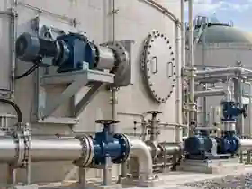
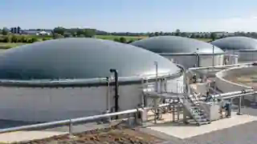

From mixing and isolation to access, pumping and membrane roofs, the condition and suitability of supporting equipment can affect digester performance, maintainability and future cleanout planning.
Equipment support
Common components we can help review and source.
DigesterCheck can help owners identify equipment needs, organize specifications and coordinate suitable options for anaerobic digestion facilities. Equipment support is separate from our independent condition assessment service.
Assessment first.Equipment recommendations should follow the actual operating need—not the other way around.

Agitators, valves, manways & process pipingIllustrative equipment example for visual reference.

Membrane roofs & gas-holder coversIllustrative membrane-roof configuration for visual reference.
Agitators & Mixers
Top-entry, side-entry and submersible mixing arrangements used to maintain suspension, improve circulation and reduce localized solids buildup.
Existing mixer condition and duty review
Mixing coverage and access considerations
Replacement or upgrade coordination
Valves & Isolation
Isolation and process valves used around digesters, transfer lines, sludge piping and maintenance connections.
Knife gate and isolation valves
Maintenance and cleanout isolation points
Replacement planning and specification support
Manways & Access Doors
Tank access points used for inspection, maintenance and future cleanout activities. Safe access planning is especially important before shutdown work.
Existing access arrangement review
Manway size and location considerations
Retrofit and replacement coordination
Pumps & Solids Handling
Transfer and recirculation equipment can provide useful operating clues and may become critical during maintenance or cleanout preparation.
Transfer and recirculation pumps
High-solids service considerations
Temporary pumping requirements
Heating & Recirculation
Heating loops, heat exchangers and recirculation systems help maintain biological operating conditions and can influence maintenance planning.
Heating loop arrangement review
Recirculation accessibility
Maintenance and replacement considerations
Membrane Roofs & Gas Holders
Single- and double-membrane roof systems, gas-holder covers and associated support systems used on anaerobic digesters.
Membrane condition and operating observations
Pressure, support-air and attachment considerations
Replacement or retrofit planning coordination
Other Digester Components
We can also review or help coordinate other digester-related components where they affect operation, access or maintenance.
Gas collection components
Instrumentation and level indication
Piping, nozzles and maintenance connections
How we approach equipment
Need-based, not product-driven.
Where an assessment identifies an equipment concern, DigesterCheck can help define the requirement, compare available options and coordinate with qualified suppliers or engineering partners as needed.
01Identify the need
02Define the requirement
03Review suitable options
04Owner decides
Important: Equipment selection, structural modifications, confined-space access and engineered alterations may require review or approval by qualified engineers, OEMs, contractors or other specialists. DigesterCheck does not represent equipment sourcing support as engineering certification.Ask About Digester Equipment →